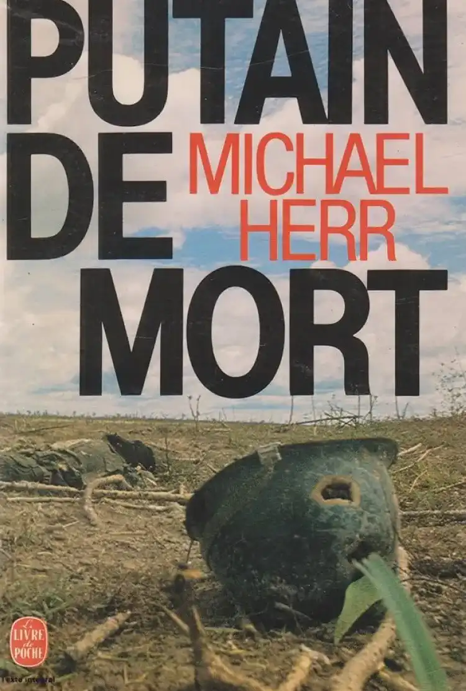

Dispatches
"Dispatches" by Michael Herr: An Intimate Look at the Vietnam War.
In his iconic work "Dispatches," Michael Herr goes beyond being a mere observer of the Vietnam War. He becomes an active witness, plunging into the heart of the horror and absurdity of the conflict. His perspective transcends traditional journalism to become a personal and deeply empathetic experience.
Raw Testimony from the Vietnamese Hell
Herr doesn't seek to embellish reality. His words are shards of truth that tear through the veil of illusion. He lays bare the horror of war without any pretense or artifice. Each page resonates like a cry of distress, a scream that cannot be ignored.
"Dispatches" : An Intimate Account
This book is not an impersonal chronicle of wartime facts. It is a dive into the souls of the soldiers, an attempt to understand their struggle, pain, and enduring humanity amid the chaos. Herr gives a voice to those whose words are often drowned out by the tumult of battle.
The Poignant Dialogues of Soldiers
Through the soldiers' conversations, Herr weaves a complex tapestry of emotions and reflections. He captures silent fears, fragile hopes, and moments of camaraderie that emerge even in the worst horrors of war. Each word resonates like a shard of humanity amidst the carnage.
Indelible Trauma: The Aftermath of War
Michael Herr not only describes the horrors of the battlefield but also explores the invisible scars that persist long after the fighting ends. Psychological traumas, nightmares that haunt the nights – everything is approached with a heart-wrenching sensitivity.
The Legacy of "Dispatches"
More than just a book, "Dispatches" is a literary memorial for those who lived and perished in the jungles of Vietnam. It continues to enlighten future generations about the true nature of war. It is a poignant reminder of the importance of understanding the human consequences of these devastating conflicts. Thus, through the words of Michael Herr, the Vietnam War ceases to be a mere historical event. It becomes a shared experience, a common pain, and an indelible lesson for humanity. "Dispatches" is more than a war book; it is a soulful outcry against the horror of violence and a plea for understanding and peace.